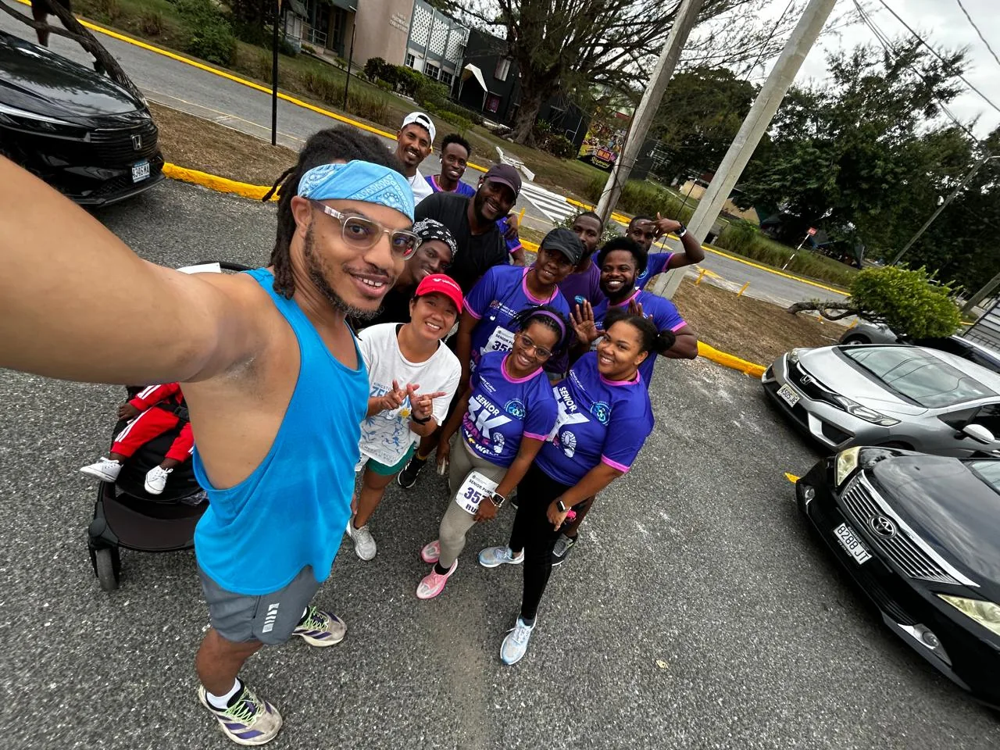
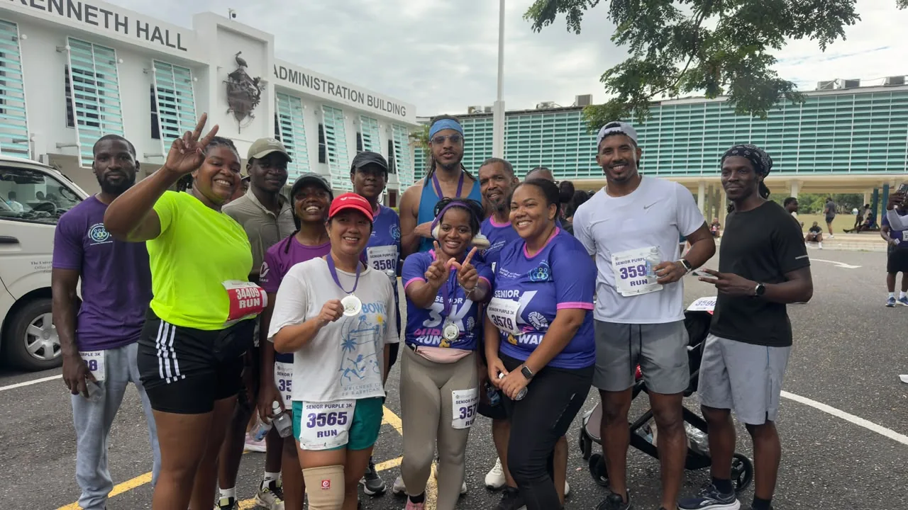

Kevin
Fairman
Chip time13:55
Overall62 / 856
Men59 / 406
Division: 14 / 91 · M3039

Wadada Run Club members joined the NCSC Senior 3K Purple Run & Walk on 27 September 2026. The morning brought strong performances, personal bests and a chance to celebrate together.

Selected Wadada Run Club results from the 3K Run. Chip and gun times are shown as listed in the event results.
Highlights from runners’ reflections and the team’s race-day experience.
Kevin reported getting near the front early, running about 4:00 for the first kilometre, then holding roughly 4:56/km for the next two. His Garmin recorded a 3:58 kilometre split.
Teammates praised Lyrae’s race and her work getting group and individual photos organized. She said the quick start nearly took her out and she needed a short walk break after setting off with the faster pack.
Nathanael shared that his son finished ahead of him. The chat also celebrated multiple PBs and the steady progress coming from the group’s weekly runs.
Selected watch and Strava best efforts. These are distance splits and segment records, not additional official 3K finish times.
Strava best efforts marked as new all-time bests; Garmin separately shows 3:58 for 1 km.
Best efforts recorded on race day, shown against all-time history.
Wadada Run Club members and fellow participants celebrate together after the 3K.

More moments from the runners, supporters and finish area.
Photos by Lyrae Maynard-Reid
From a 3:58 opening kilometre to personal bests and all-time best efforts, the morning delivered plenty to celebrate. WRC members raced, captured each other’s moments and shared encouragement throughout the event.
Images may feature club or race participants. For a correction, copyright concern or removal request, email wadadarunclub@gmail.com with the image URL. See the photography and media policy.
© 2026 Wadada Run Club · Run smart. Run together. wadadarunclub@gmail.com · Copyright & content use